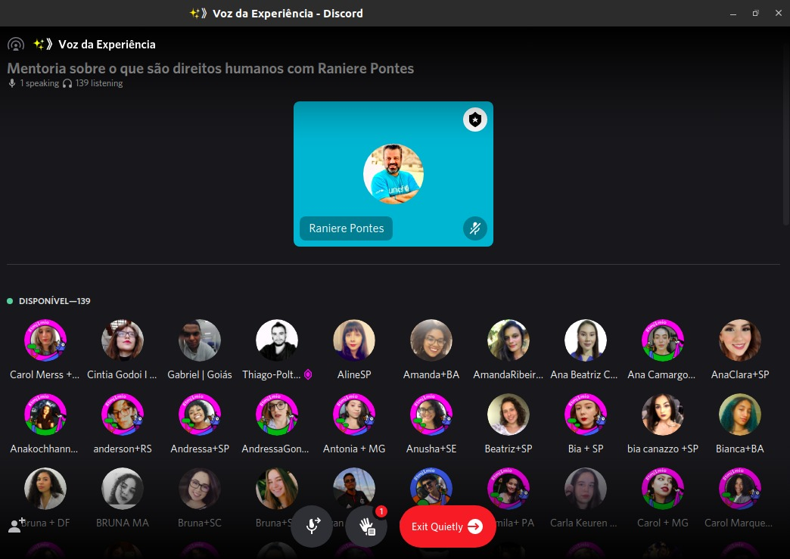

Voz Da Experiência
Mentoria - Thalis Antunes
Mentoria - Justiça Social | Isabela Bueno
Mentoria - Direitos Humanos e o mundo do trabalho | Raul Balestra
Mentoria - Educação Emancipadora | Gustavo Heidrich
Mentoria - Direitos Humanos - Raniere Pontes
Bate-Papo com Rafael Medeiros
Bate-Papo Sobre Saúde mental e Tech - Curadoes do Pode Falar
Bate-Papo - O Seu trabalho tem espaço no futuro | Curadores do 1MiO
Bate-Papo #Educativista
Bate-Papo sobre Saúde mental com Genivaldo
Bate-Papo - O que é a sigla LGBTQIAP+ com os curadores 1MiO
Bate-Papo - Feminismo para o fim do mundo com Tesllyn
Bate-Papo - Como a Internet mudou o mundo